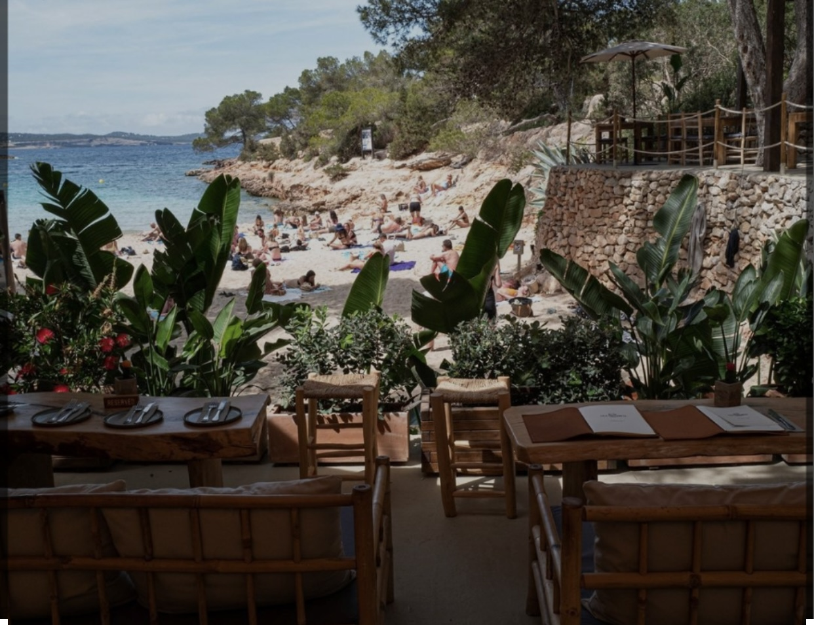
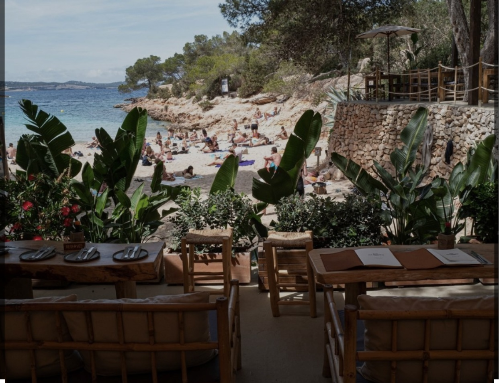

CHIRINGUITO
En nuestro chiringuito podras difrutar de tragos, tapas, bocadillos y pescados a la plancha realizados por nuestro chef Pepe, mientras disfrutas de la playa y el mar.

En nuestro chiringuito podras difrutar de tragos, tapas, bocadillos y pescados a la plancha realizados por nuestro chef Pepe, mientras disfrutas de la playa y el mar.
